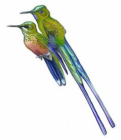
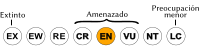
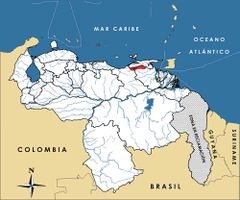

Aglaiocercus berlepschi
| Colibrí coludo de Caripe | |
|---|---|
|  | |
| Riesgo de extinción | |
|  En peligro (UICN) | |
| Clasificación científica | |
| Reino: | Animalia |
| Filo: | Chordata |
| Clase: | Aves |
| Orden: | Apodiformes |
| Familia: | Trochilidae |
| Género: | Aglaiocercus |
| Especie: | Aglaiocercus berlepschi |
| Nombre binomial | |
|
Aglaiocercus berlepschi Hartert, 1898 | |
| Distribución | |
|
 Mapa de distribución de Aglaiocercus berlepschi | |
Contenido
Información de Evaluación
- Categoría y Criterio Regional: En Peligro B1ab(ii,iii,iv)
- Fecha de Evaluación Regional: 2015
- Evaluadores: Jesús Morales-Campos y Ariany García-Rawlins
- Categoría y Criterio Global: En Peligro B1ab(ii,iii,v)
Justificación
Evaluaciones Previas
1999: No Evaluada (NE)
2008: En Peligro (EN)
Información General
Nombres comunes
Colibrí coludo de Caripe, colibrí coludo de Turimiquire, colibrí coludo de Venezuela, colibrí coludo venezolano, silfo de Berlepsch, Venezuelan Sylph.
Notas taxonómicas
Sinónimos
Descripción
Colibrí bastante atractivo de tamaño mediano, siendo el macho de mayor talla y más vistoso, de 22 cm (incluyendo la cola), la hembra entre 9,5 y 11 cm. Un rasgo llamativo que le caracteriza es la cola larga, la cual llega a medir entre 14 y 15 cm, con forma acanalada y horquillada y de intenso color azul violeta con matices verdes en la punta. La cabeza está coronada en la frente por una mancha de brillante color verde claro y la barbilla es de un azul violeta relumbrante. El resto del cuerpo presenta diversos matices de verdes bronceados. La hembra es de menor tamaño, de cola corta, con el vientre blanco y el resto del plumaje de colores pálidos (Schuchmann y Duffner 1993, Schuchmann 1999, Restall et al. 2007, Altshuler et al. 2015).
Distribución
Recientemente Aglaiocercus berlepschi fue reclasificada como una especie endémica de Venezuela. Se distribuye en zonas montañosas del oeste y el centro del estado Sucre (macizo de Turimiquire) desde el Cerro Turimiquire hasta el Cerro Papelón, entre 1450 y 1800 m de altitud, y al norte del estado Monagas, y en Cerro Negro. Algunos investigadores sugieren que su presencia en la península de Paria debe ser confirmada, ya que los reportes podrían ser erróneos. Habita en los bordes de bosques húmedos, en bosques secundarios y en plantaciones de café (Schuchmann y Duffner 1993, Schuchmann 1999, Restall et al. 2007). Hace poco fue elevada a la categoría de especie, separándola de Aglaiocercus kingi, la cual es de amplia distribución andina y no se reporta como amenazada a escala global (Hilty 2003, Restall et al. 2007, IUCN 2014).
- Sistema: Terrestre
- Bioregión:
- Intervalo altitudinal (m): 1450-1800
- Endémica: Sí
Situación
Aglaiocercus berlepschi tiene una distribución muy restringida y amenazada, que se calcula en cerca de 3000 km2, lo cual la hace en especial vulnerable a la pérdida y al deterioro del hábitat. De hecho, se sabe con certeza que la deforestación ya ha disminuido la extensión y calidad de su área de vida. En el pasado fue bastante común en Cerro Negro, donde se cuenta con numerosas observaciones y varios ejemplares colectados, pero en la actualidad no existen datos publicados que indiquen su tamaño o variaciones poblacionales. Aunque a escala global se establece su clasificación En Peligro, todavía es localmente común y es frecuente su presencia en áreas intervenidas, tal como sucede con otras especies del mismo género (Schuchmann y Duffner 1993, Restall et al. 2007, IUCN 2014).
- EOO (km2): 3000
- AOO (km2): Temporalmente sin información
- Tendencia Poblacional: Decreciendo
Amenazas
Su principal amenaza es la deforestación dentro de su muy restringida área de distribución, en lo cual coincide con la situación de riesgo de otras especies de aves. Se considera que la región del Turimiquire es una de las áreas más amenazadas de Venezuela. En las zonas baja y media, la vegetación original ha sido sustituida por sabanas antrópicas y matorrales. La presión humana es severa incluso dentro de las áreas protegidas, y en el parque nacional El Guácharo las prácticas agrícolas de los campesinos locales, que implican la destrucción del bosque, quemas repetidas y eliminación del sotobosque para cultivos de café, han reducido el bosque húmedo montano a solo un pequeño porcentaje del original. La serranía de Turimiquire tiene una larga historia de impactos ambientales, principalmente con fines agrícolas, por incendios e invasiones de tierra. La amenaza es aún mayor y de larga data en las partes altas de las cuencas, tradicionalmente áreas destinadas a la siembra del café, cultivo que para 1925 alcanzaba los 2000 m de altitud. Esta información es alarmante y debe considerarse su posible exageración.
Conservación
Aglaiocercus berlepschi se encuentra incluida en el Apéndice II de la Convención sobre el comercio internacional de especies amenazadas de fauna y flora silvestres (Cites 2014). El macizo de Turimiquire conforma, junto con la península de Paria y la isla de Trinidad, uno de los centros suramericanos de mayor endemismo de aves. Es una zona de alto endemismo también de plantas, y está incluida en dos Áreas de Importancia para la Conservación de las Aves con prioridad crítica (Lentino et al. 2005). Aunque la superficie de distribución de la especie abarca el parque nacional El Guácharo, la Zona Protectora Macizo Montañoso del Turimiquire, que forma parte del AICA (Áreas de Importancia para la Conservación de las Aves) Caripe-Paria, ninguna de estas figuras brinda una protección efectiva. Para lograr la conservación de esta y otras especies del lugar, se debe reducir y regular la conversión de bosques en cultivos, en particular dentro del parque, donde habría que evaluar la calidad del hábitat involucrando a las comunidades locales tanto en las actividades de investigación como en campañas de educación ambiental. Es importante realizar un análisis de viabilidad del hábitat, determinando su extensión y calidad en el Turimiquire.
Autorías
Autores originales
Christopher J. Sharpe y Miguel Lentino
Colaboradores
Ilustrador
Pigmalion's Workshop
Referencias
- Altshuler, D. L., de Juana, E., Boesman, P. y Sharpe, C. J. (2015). Venezuelan Sylph (Aglaiocercus berlepschi). En: del Hoyo, J., Elliott, A., Sargatal, J., Christie, D. A. y de Juana, E. (Eds.). Handbook of the Birds of the World Alive. Lynx Edicions. Barcelona. (Descargado de www.hbw.com/node/55628 el 15/07/2015).
- Cites. (2014). Apéndices I, II y III (válidos desde el 14 de septiembre de 2014). Convención sobre el Comercio Internacional de Especies Amenazadas de Fauna y Flora Silvestres (CITES). 47 pp.
- Hilty, S. L. (2003). Birds of Venezuela, second edition. Princeton University Press. Princeton, NJ, USA. 878 pp.
- IUCN (2014). The IUCN Red List of Threatened Species. Version 2014.3. Accesible en www.iucnredlist.org.
- Lentino, M., Esclasans, D. y Medina, F. (2005). Áreas importantes para la conservación de las aves en Venezuela. Páginas: 621-730. En: BirdLife International y Conservation International (Eds.). Áreas importantes para la Conservación de las aves en los Andes tropicales: sitios prioritarios para la conservación de la biodiversidad. BirdLife International (Serie de conservación de BirdLife No. 14) & Soc. Audubon de Venezuela, Caracas. Quito, Ecuador.
- Restall, R., Rodner, C. y Lentino, M. (2006). Birds of Northern South America, an Identification Guide. Volume 1: Species Accounts. Volume 2: Plates and Maps. Yale University Press. New Haven, USA and London, UK. 880 pp.
- Rodríguez, J. P. y Rojas-Suárez, F. (1999). Libro Rojo de la Fauna Venezolana, segunda edición. PROVITA, Fundación Polar. Caracas. 444 pp.
- Rodríguez, J. P. y Rojas-Suárez, F. (Eds.) (2008). Libro Rojo de la Fauna Venezolana, tercera edición. Provita y Shell Venezuela, S. A. Caracas, Venezuela. 364 pp.
- Schuchmann, K. L. (1999). Family Trochilidae (Hummingbirds). Páginas: 468-680. En: Handbook of Birds of the World. Volume 5: Barn Owls to Hummingbirds. Barcelona, España
- Schuchmann, K. L. y Duffner, K. (1993). Geographische Variation und Speziationmuster der andinen Kolibrigattung Aglaiocercus Zimmer 1930. Mitt. Zool. Mus. Berlin 69 Suppl.:(17): 75-92.
- Sharpe, C. J. y Lentino, M. (2015). Colibrí coludo de Caripe, Aglaiocercus berlepschi. En: J.P. Rodríguez, A. García-Rawlins y F. Rojas-Suárez (eds.) Libro Rojo de la Fauna Venezolana. Cuarta edición. Provita y Fundación Empresas Polar, Caracas, Venezuela. Recuperado de: animalesamenazados.provita.org.ve/content/colibri-coludo-de-caripe Mié, 04/04/2018 - 14:26